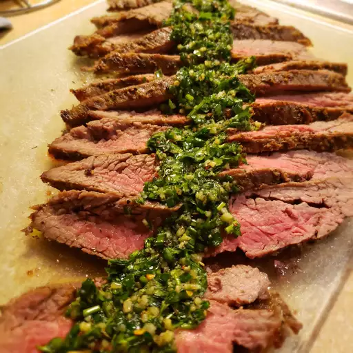

Marinated Flank Steak

A great flank steak marinade like this one is important if you want
a tender, juicy, flavorful steak. Make sure you marinate your flank
steak for at least 2 hours for best results or longer if you have time.
This wonderful quick and easy recipe also works great when the steak is
sliced and used for fajitas.
Flank steak is a lean cut of beef that comes from the cow's lower abdominal
muscles. It's a relatively tough cut that's low in fat, which means a few things:
Flank steak doesn't need to be trimmed, it's inexpensive compared to other cuts,
and it benefits greatly from marination.
How to Cook Flank Steak
There are plenty of ways to perfectly cook a flank steak. In this recipe, the steak
is grilled — we love the bold, smoky flavor the grill gives the meat. But you can
also easily cook your flank steak in the oven or on the stove.
Ingredients
- Vegetable Oil
- Low-sodium soy sauce
- Red wine vinegar
- Fresh lemon juice
- Worcestershire sauce
- Dijon mustard
- Garlic
- Ground black pepper
- Flank Steak
Steps on how to Marinated Flank Steak
- Gather all Ingredients
- Whisk together oil, soy sauce, vinegar, lemon juice, Worcestershire sauce, Dijon mustard, garlic, and pepper for marinade until thoroughly combined. Place steak in a 9x13-inch glass baking dish.
- Pour marinade over flank steak in the baking dish; turn several times to coat thoroughly with marinade. Cover, and refrigerate for 2 to 6 hours, or up to 12 hours if you have time.
- When ready to cook, preheat an outdoor grill for medium-high heat and lightly oil the grate.
- Remove steak from the marinade and shake off excess. Discard the remaining marinade.
- Cook steak on the preheated grill for about 5 minutes per side, or to desired doneness.
- Remove from the grill and let rest for 5 minutes before slicing and serving.
- Serve hot and enjoy!